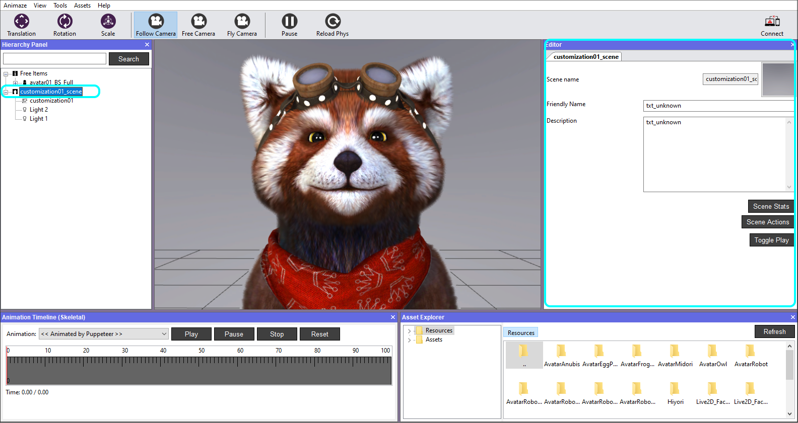
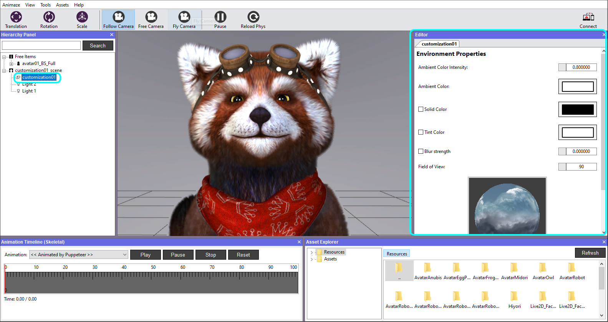
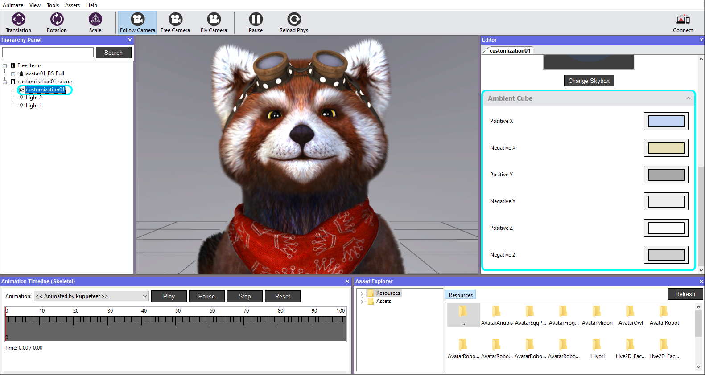
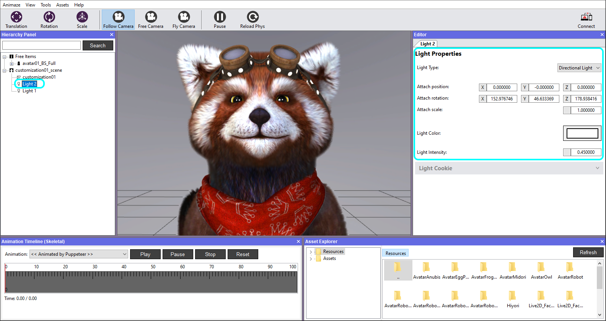

Environment Properties
Selecting the scene in the Hierarchy Panel, will display its details such as name, description and icon in the Editor Panel.

Scene Stats - displays the numerical values in terms of vertex, polygons, textures, their sizes, an overall analysis of the current selected item. It also retrieves info on unused textures and a full textures report.
When the background is selected in the Hierarchy Panel, you will be able to adjust environment properties within the Editor.
Tick Solid Color for a background consisting of a uni-solid color if preferred instead of a skybox. This will also benefit from ambient cube’s chosen colors.
Note that this is a debug feature, so at start-up the Animaze Editor will load the skybox.

The Ambient Color Intensity sets the global light color intensity in the scene.
The Ambient Color is the main ambiental color influencing the scene, but it will modulate with the colors coming from 6 directions of the Ambiental Cube: X & negative X, Y & negative Y, Z & negative Z. Each of these can be manually set.

Light Properties
The properties of a light can be customized depending on the selected Light Type (Directional, Point Light, Spot Light) - set its position, rotation and scale, color, range, intensity.

Don't forget to save your work when you are done.